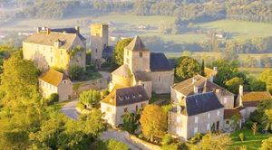
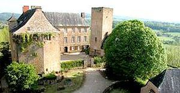
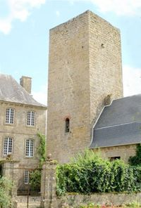
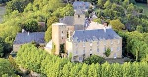
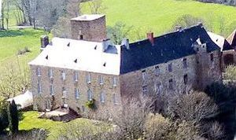
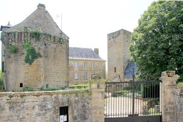

Recensement Jean-Claude Truffet
| Département | 46 — Lot |
| Canton | Martel |
| Commune | Cavagnac |
| Type d'édifice | Château |
| Période d'origine | XIII-XIV |






CAVAGNAC, la seigneurie est tenue par les Robert de Cavagnac au XIIe siècle. En 1365, Bertrand, seigneur de Cavagnac, est le lieutenant du vicomte de Turenne Guillaume Roger de Beaufort. À la fin du XIVe siècle la famille de Guiscard, originaire de Gagnac, hérite du château par le mariage de Bertrand de Guiscard avec Y. de Cavagnac. Antoine de Guiscard est seigneur de Cavagnac en 1455. Lui succède son neveu, Antoine de Guiscard, seigneur de Cornac, en 1504. La seigneurie de Cavagnac devient une baronnie au XVIIe siècle. Pour finir le château est saisi et vendu comme Bien National. Les Guiscard séteignent en 1790 avec le décès de Jean Pierre de Guiscard, baron de Thédirac, seigneur de Cavagnac et autres lieux époux de Paule Augustine de Plas, issue de la noble maison des Plas de Curemonte. Les liens entre les deux familles ne sarrêtent pas là puisque Marie Madeleine de Guiscard, la sur de Jean-Pierre de Guiscard, avait épousé le marquis de Plas de Curemonte. Cest un descendant de la famille des Plas, branche des comte Desplaces qui est aujourdhui propriétaire du château de Cavagnac. Gustave, comte Desplaces, (1820-1869) issue de la famille des Plas, branche du Quercy. Son père le comte Claude Desplaces ayant été secrétaire du baron dHaussez, ministre de Charles X. Gustave Desplaces est lun des principaux artisans du développement des chemins de fer en France dans la première moitié du XIXe siècle. En 1852 il construit le pont de Tarascon qui enjambe encore aujourdhui le Rhône, reliant ainsi la Provence au Languedoc. On lui doit aussi notamment la gare Saint-Charles à Marseille et les docks de la Joliette, le chantier le plus cher du second Empire. Décoré de la légion dhonneur à lâge de 30 ans par Napoléon III il épouse Alice Dumalle de Colonjon, fille de Reine de Montgolfier et nièce de Marc Seguin, linventeur de la chaudière tubulaire, qui lui donne deux fils dont un écrivain le comte Henri Desplaces (1869-1922), grand-oncle de lactuel propriétaire de Cavagnac. aujourd'hui propriété de M. Ph. Viguié Desplaces.
Le château de Cavagnac est construit sur le site dune ancienne villa romaine, le bourg de Cavagnac est un cas remarquable de castrum, aujourd'hui, à l'exception évidemment des données topographiques, Mais il reste le château à l'extrémité de l'éperon. Avec sa tour du Xllle siècle, séparée du logis seigneurial, l'enceinte murée qui cerne le parterre. Sur cet éperon dominant la Tourmente on distingue, au sud et au sommet de la butte, l'hospitium est une demeure seigneuriale et ses vestiges, ainsi que la grosse tour carrée du XIVe siècle, l'aile Est-Ouest avec les transformations subies du XVIe au XIXe siècle. La grande aile au classicisme sévère, avec façade au midi, est articulée au bâtiment précédent vers 1750. Au nord, l'enclos est occupé par diverses dépendances, subsiste le donjon dont on voit encore les restes de mâchicoulis et une haute tour dite « Romane » ou « Sarrasine ». Le château féodal laisse la place au XVIe siècle à un nouveau château, flanqué dun monumental corps de logis au milieu du XVIIIe siècle dont la façade est remarquable de sobriété. Le château reprend les plans de larchitecture dune belle demeure parisienne et témoigne du gout et de la puissance des Guiscard. La Tour-Maîtresse qui est conservée date du XIIIe siècle, ainsi peut-être que les vestiges d'un logis primitif reconstruit ou réaménagé aux XVe et XVIIe siècles. Caractérisé par ses fenêtres chanfreinées à appuis épais et ses canonnières pour arme de faible calibre percées pour certaines d'entre elles dans les allèges, le pavillon bastionné, pentagonal, qui prolonge l'aile orientale, en dépit de son allure médiévale, ne date apparemment que de l'extrême fin du XVIe siècle ou des premières décennies du siècle suivant.
Gustave Desplaces
"
Château de Cavagnac et sa tour.